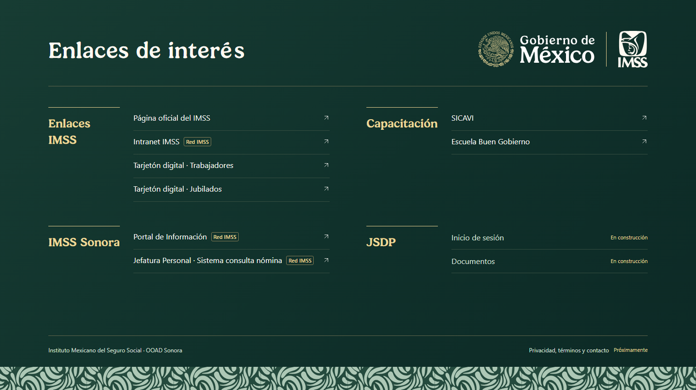
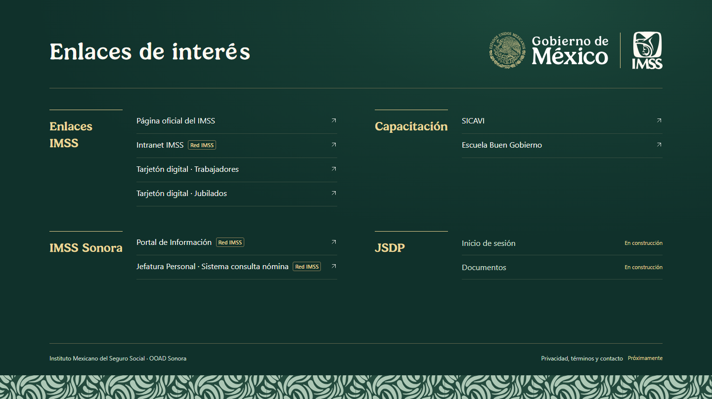
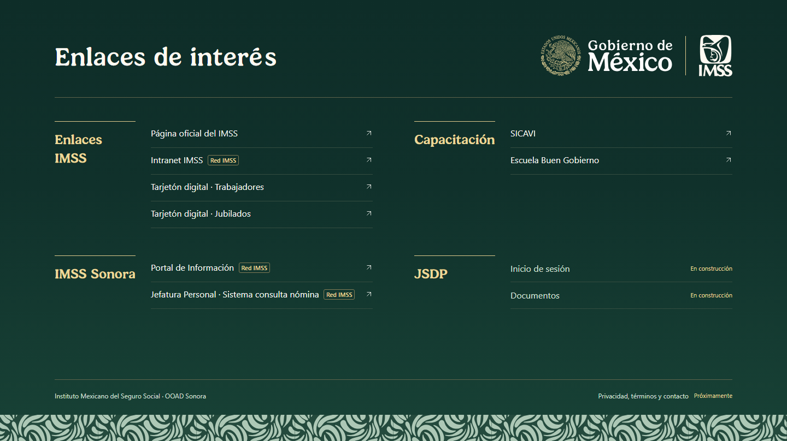

Tres degradados para el footer
La combinación elegida se mantiene en las tres propuestas: verde base de I, colores de texto de J y franja ornamental de K. El acomodo y los logotipos claros permanecen iguales.
Cambia únicamente la dirección y la intensidad del degradado suave sobre el fondo principal. La franja salvia inferior conserva sus 48 px, su ancho completo y su color uniforme.
L · Degradado diagonal
Una transición suave del verde iluminado en la esquina superior izquierda hacia un verde más profundo abajo a la derecha.



M · Luz superior
Luz verde difusa desde la parte superior derecha, con el verde institucional dominando el resto de la superficie.



N · Profundidad vertical
Un cambio vertical delicado, más profundo arriba y ligeramente más luminoso hacia la franja inferior.
